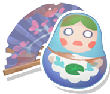
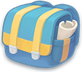

Добро пожаловать в Портию
ЖителиИнформация о жителях Портии

Трекер артефактовПомощник по сбору артефактов

Трекер рыбПомощник отслеживания пойманных рыб
КалькуляторРассчитай нужные материалы
РецептыКнига строителя

ПредметыПросмотр всех предметов